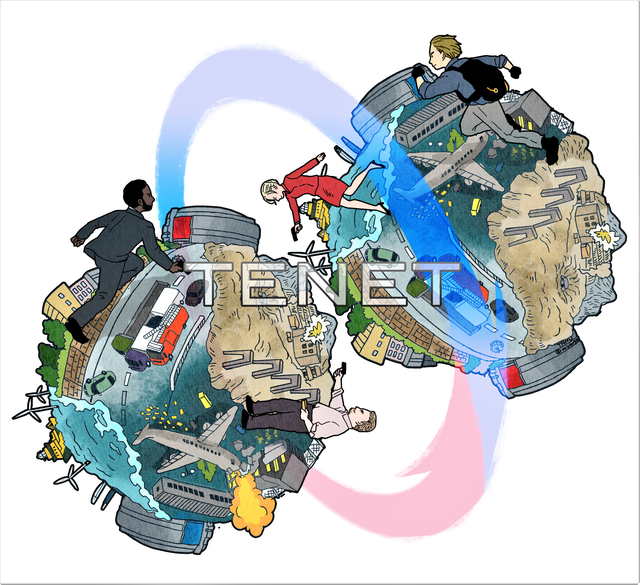
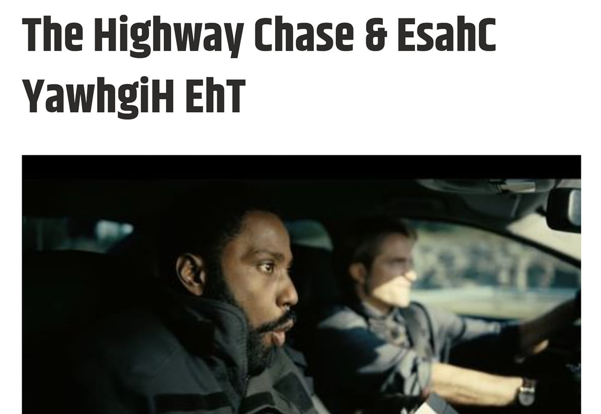
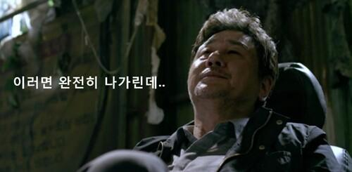
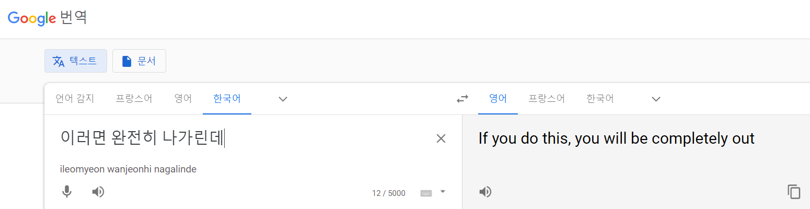
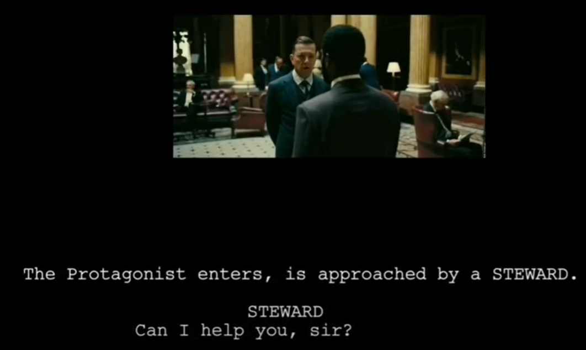
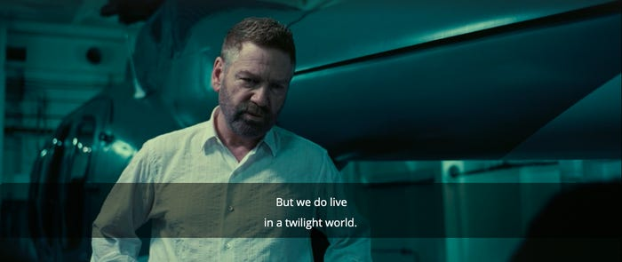
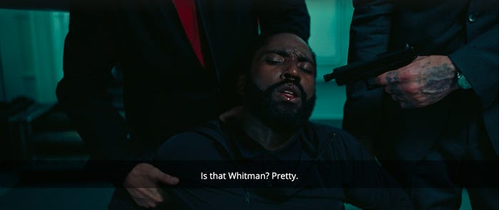

영화 테넷(Tenet)의 원문 대사 및 해석
게시: 2021-01-28T06:30:12+09:00
* 이 포스트에는 영화 테넷(Tenet)에 대한 중요 스포일러가 있습니다.

최근에야 영화 테넷(Tenet)을 보았습니다. 하도 어렵다고 소문이 나서 반쯤 포기하고 봤고요, 2번쯤 보고나니까 비로소 좀 이해가 되더라구요. 재미있었습니다. 저는 한 4번 봤네요.

(테넷의 클라이맥스 부분을 선정한 기사 중 참 재치있게 잘 뽑았다고 생각되는 기사 타이틀입니다.) 저는 원래 영어에 서툰 편입니다만, 그래도 같은 영화를 한글 자막 끼고 4번 정도 보니까 일부 구절이 귀에 들어왔습니다. 영화는 그냥 줄거리와 비주얼 만으로도 가치가 있습니다만 그래도 대사 한줄한줄의 멋도 함께 느끼면 좋거든요. 가령 영화 '신세계'에서 최민식의 명대사인 다음 장면을 영어 자막으로 본다고 생각해보십시요. 그 쿨한 허탈함과 낭패감이 제대로 느껴지겠습니까 ?
 
(구글 번역기로 번역하면 정말 이상한 대사가 되어버립니다. 제대로 된 영어 번역은 뭘까요? "That means everything was in vain" ? "Now I find myself in a deep shit" ? 뭘로 해도 저 원문의 맛은 느끼기 어렵습니다.) 특히 영어는 간결함이 생명인 언어입니다. 우리 말도 아름답지만 영어로 된 인간 관계는 영어로 볼 때 좀 더 잘 느낄 수 있다고 생각합니다. 그래서 제가 꽤 멋있는 대사, 또는 특색있는 장면이라고 생각했던 부분을 몇 개 찾아보았어요. 듣다가 도저히 알아들을 수 없는 부분은 Tenet quote라는 검색어로 구글링을 열심히 해보면 군데군데에서 찾을 수 있었습니다. 1. 런던 사교클럽에서 집사와 대화하는 주인공

Can I help you sir. 무슨 일로 오셨습니까? I’m Mr. Crosby’s lunch. 크로스비(마이클 케인) 씨와 점심 약속이 있는데요. I presume you mean “Sir” Michael Crosby’s lunch. 아마도 마이클 크로스비 "경"과 점심 약속이 있다는 뜻이겠지요. Presume away. 그렇게 간주하세요. 이 부분도 한국말로 번역을 해놓으니 그 집사의 오만하고 잰 척하는 태도와 그를 비꼬는 주인공의 태도를 제대로 느낄 수가 없네요. 영화 상에서는 평범한 양복을 입고 태도가 매우 평민스러운 주인공이 들어서자 마치 같잖다는 듯한 표정의 집사가 앞을 가로막으며 이어지는 대화입니다. 저기서 특히 추정한다는 뜻의 presume이라는 동사를 쓴 것이 핵심 같아요. 보통은 I think 같은 표현을 쓰거나 그냥 you mean “Sir” Michael Crosby’s lunch 라고 하쟎아요. 그런데 저렇게 I presume 또는 I say 라는 식으로 말하는 것이 전통적 영국 신사들 특유의 어투라고 하더군요. 미국인들은 매우 재수없게 생각한다고 합니다. 2. 마이클 케인과 주인공과의 대화 Well how do I get to Sator? 사토르에게는 어떻게 접근하지요? Through her of course. 당연히 그 여자를 통해서지. Well, you may have an inflated idea of my powers of seduction. 글쎄요, 제 수컷으로서의 매력을 너무 과대평가하시는 거 아닌가요? Hardly. We have an ace in the hole. 그럴 리가. 비장의 무기가 있네. You’re carrying a Goya in a Harrods bag? 백화점 봉투에 고야 그림을 넣고 다니세요?
(런던 해로즈 백화점입니다.)
여기서 ace in the hole이라는 것은 카드게임, 특히 stud poker라는 게임에서 유래된 것입니다. 이 게임에서는 각 플레이어에게 먼저 1장씩의 카드를 뒤집은 채로 나눠주고, 이어서 나머지를 앞면을 드러나게 나눠줍니다. 처음 나눠준 뒤집힌 카드는 끝까지 감춘 채로 가지고 있게 되는데, 그 카드를 hole card라고 부릅니다. 여기서 hole이라는 물론 구멍, 즉 감춰둘 장소를 뜻하고요. 그런데 hole card가 에이스이면 최강의 패를 숨기고 있는 셈이지요. 그런 상황을 ace in the hole이라고 하는 것입니다. 또 Harrods는 런던에 있는 고급 백화점의 이름입니다. 우리로 따지면 현대백화점 같은 것이지요. 아무리 고급 백화점 봉투라도 종이 봉투에 수십억짜리 명화를 넣고 다니니까 깜짝 놀란 것입니다. 물론 그림을 딱 보고 고야인지 고갱인지 아는 주인공의 교양이 제게는 더 놀랍네요. CIA 하려면 그 정도 교양은 갖추고 있어야 하나봐요? 3. We live in a twilight world. And there are no friends at dusk. 주인공이 키에프에서 작전할 때 사용한 암호입니다. 뜻은 '우린 황혼의 세계에 살고 있어. 땅거미 속엔 친구가 없지'라는 것이지요. 우리말로 하면 그냥 다 암호입니다만, 암호에는 cipher와 code가 있습니다. Cipher라는 것은 알파벳 하나하나를 일정한 규칙이나 알고리즘에 의해 변경하는 것입니다. 이건 그 암호화에 사용된 키값을 알면 해독이 가능하다는 단점이 있지만, 대신 평문을 그래도 완전히 암호화할 수 있습니다. 영화 '이미테이션 게임' 속에 나온 제2차 세계대전 당시 독일군의 이니그마 암호 해독 이야기가 바로 그런 cipher의 예입니다. 그에 비해 code라는 것은 그런 복잡한 수학적 지식에 의존하지 않고, 어떤 단어가 특정 사람이나 물건, 신호를 뜻한다고 그냥 자기들끼리 미리 약속해두는 것입니다. 당연히 이 code로는 의사전달이 완벽하지 않습니다만, 어떤 수퍼컴을 가져와도 절대 해독이 안되는 장점이 있습니다. 역시 제2차 세계대전에서 진주만 습격 개시 신호로 '도라 도라 도라'를 외치는 것이 바로 그것입니다. 노르망디 상륙 작전 전에 미리 낙하산으로 투입된 공수부대원들이 자기들끼리의 오인 사격을 피하기 위해 한쪽이 'Thunder' 라고 외치면 다른쪽이 'Flash'라고 대답하는 것도 그런 code의 일종입니다. 테넷 속에서 'We live in a twilight world' 라고 말하면 상대가 'there are no friends at dusk'라고 말하는 것도 여기에 속하지요. 그런데 영화 중반에 악당 사토르가 주인공 머리에 총을 들이대며 테스트 삼아 저 앞부분을 말하는 장면이 나옵니다.
 
They tend to buy, not sell. But we do live in a twilight world. 그들은 주로 사는 편이지 파는 편이 아니야. 하지만 우리는 황혼의 세계에 살고 있지. Is that Whitman? Pretty. 휘트먼인가? 이쁘네. 저는 저 장면을 보고 We live in a twilight world, there are no friends at dusk 라는 문장이 미국 시인 월트 휘트먼의 싯구에 나오는 문장이라고 생각했습니다. 그런데 찾아보니 휘트먼이 Twilight라는 짧은 시도 쓰고 Twilight Song이라는 시를 쓰기도 했지만, 그런 시 속에 저런 문장은 없더군요. 생각해보니 당연합니다! 그렇게 유명한 싯구에 나오는 구절을 그대로 쓰면 그게 무슨 암호겠어요! 상대방이 전혀 짐작 못할 문장이어야 암호로서의 가치가 있지요. 하지만 여기서 중요한 것은 저 저렇게 문장 하나 딱 듣고 휘트먼의 Twilight Song을 떠올릴 만큼 교양이 풍부한 사람이라는 것이지요. CIA 출신은 저렇게 고야나 휘트먼처럼 예술 분야 교육도 따로 받나요? 많은 사람들이 저기서 나오는 We live in a twilight world라는 암호가 무슨 뜻인지 궁금해하고 나름대로의 해석을 내놓기도 합니다만, 어떤 사람은 저 영화에 조연으로 나오는 로버트 패틴슨이 주인공이었던 청춘물 시리즈 'Twilight'를 뜻하는 것이라고 우스개 소리를 하기도 합니다. 4. 다시 인버전되러 돌아가는 닐과 주인공의 대화
이 부분 때문에 특히 짠했지요. 저는 전혀 예상하지 못했습니다. 이 장면이 하도 애틋해서 그냥 번역해봤습니다. Protagonist: Neil, wait! 닐, 기다려봐! Neil: Just saved the world. Can't leave anything to chance. 방금 간신히 세상을 구했쟎아. 사소한 거라도 운에 맡겨둘 수는 없지. Protagonist: But can we change things if we do it differently? 하지만 우리가 다르게 행동하면 결말을 바꿀 수 있을까? Neil: What's happened, happened. Which is an expression of faith in the mechanics of the world. It's not an excuse to do nothing. 이미 일어난 일은 일어난 거야. 그건 이 세상이 돌아가는 이치에 대한 신뢰의 표현이지. 그건 아무 것도 안하는 것에 대한 변명이 아니야. Protagonist: Fate? 운명이라는 말인가? Neil: Call it what you want. 뭐라고 부르던 간에 말이야. Protagonist: What do you call it? 넌 그걸 뭐라고 부르는데? Neil: Reality. Now let me go. 현실. 이제 갈게. Protagonist: Hey, you never did tell me who recruited you, Neil. 이봐, 결국 누가 널 끌어들였는지는 말 안 해줬는데, 닐? Neil: Haven't you guessed by now? You did! Only not when you thought. You have a future in the past. Years ago for me, years from now for you. 아직도 짐작이 안가? 너야. 단지 니가 생각하지 못했던 때에 그랬을 뿐이지. 넌 과거 속에 미래가 있어. 내겐 몇 년 전이고, 너에겐 몇 년 후의 일이야. Protagonist: You've known me for years? 나하고 몇 년간이나 알고 지냈다고? Neil: For me.. I think this is the end of a beautiful friendship. 내겐 그렇지. 내 생각엔 이게 우리의 아름다운 우정의 마지막이야. Protagonist: But for me it's just the beginning. 하지만 내겐 시작 부분이겠네. Neil: We get up to some stuff. You're gonna love it! You'll see. This whole operation is a temporal pincer. 우린 뭔가 대단한 일을 하게 돼. 맘에 들거야! 두고 보라고. 이 모든 작전이 시간차 공격이거든. Protagonist: WHO'S? 누구의 작전인데? Neil: Yours! You're already halfway there. I'll see you in the beginning, friend. 너의 작전이지! 넌 이미 반쯤 왔어. 시작 부분에서 만나자고, 친구. Source : www.reddit.com/r/tenet/
www.cbr.com/tenet-what-does-we-live-twilight-world-mean/
www.insider.com/watch-tenet-with-subtitles-on-details-you-missed-2020-12
idioms.thefreedictionary.com/ace+in+the+hole